Archives : 2010-08
冷吗？ @ Aug 31, 2010
蚂蚁和大象结婚不久，大象就死了。
蚂蚁一边埋大象，一边痛苦：“亲爱的，你怎么这么早就去了。我这辈子不用干别的了，就TM埋你了！”
等待着什么？ @ Aug 31, 2010
早晨上班路上，广播里正在播放“工间操”的音乐。模糊的记忆中浮现出某台湾公司做工间操的情景。咦，要是我们公司也有这项活动该多好，下午工作两小时，大家一起活动下僵硬的筋骨。这种需求对于上下班极其准时的人来说或许是多余的。
除去那些尚算年轻，还有资本消耗几年的，但凡工作半辈子的人，或多或少患有腰肩颈椎、坐骨神经等慢性病。靠理疗、推拿、针灸不可能完全治愈，症状时轻时重。晚上回家自己做理疗，可是白天仍然要长时间工作，症状反反复复，何时是尽头？
噩耗不止于此，《三联生活周刊》：【好消息·坏消息】数据显示，那些中年时经常感到紧张、焦虑、恼怒以及有睡眠障碍的女性，患老年痴呆症的风险比没有这些问题的女性高出65%，而在那些中年危机持续时间超过12年的女性中，这一风险甚至会加倍。” 等待俺们的还有“老年痴呆症”的晚年？
破碎的鸡蛋 @ Aug 30, 2010
从父母家搬回物理理疗仪一台，在手佳按摩后的第二天。希望能对自己的颈肩问题有所缓解。从书店搬回花花绿绿的书籍若干，对《纽约》和韩寒的《独唱团》阅读的兴趣极大。
《独唱团》不过看完前三篇，其中有一段村上春树在“耶路撒冷文学奖”颁奖大会上发言的一句话：“BETWEEN A HIGH，SOLID WALL AND AN EGG THAT BREAKS AGAINST IT，I WILL ALWAYS STAND ON THE SIDE OF THE EGG.”（假如这里有坚固的高墙和撞墙破碎的鸡蛋，我总是站在鸡蛋一边。）
“和所有体制内谋生的人一样，他会把做这类事情直接看成是自寻短见。”这就是撞墙鸡蛋的下场，鸡蛋碎的多了，总得有人收拾吧？这不过是撞墙后那一点微弱的效应。读完前三篇我已经感到很憋屈了，且心照不宣，下面的电影或可令人获得些许缓解，呃，原来世界上自己并不是唯一的鸡蛋。现实的本质其实不是看上去那个样子的，绝望也不得不到了“云淡风清”的地步。
老罗在《秋菊男打官司》中写到：我拿那些西装革履的流氓完全没办法，我不能抑制地又说了脏话，“我操，你们他妈的怎么这么流氓？”
—《Hunger》—
英国导演Steve Mcqueen和主演Michael Fassbender的第一部电影作品，Steve Mcqueen说无关政治，有关人，人权。背景为1981 年撒切尔夫人铁腕政策下的爱尔兰。主演Michael Fassbender为德爱混血，为表现人在饥饿状态下的情形，用10周时间控制体重，64KG已经到了危险的健康极限。非传统的电影拍摄方式，让整部电影的画面感很强。
电影开始了35分钟后，主角才出现，所有的情绪都有不少过程的铺垫。为争取人权，爱尔兰准政治犯们在监狱中作出的地毯、秽物、绝食等各种方式的抵抗。电影以25年前在监狱中绝食66天后死亡的Bobby Sands为主线，为观众展开的思考。过去的事情，现在，同样仍在发生着。Bobby Sands与牧师实则拍摄了70分钟的对话，被精简到22分钟，两个人坐在逆光中，这段对话堪为电影的精华之处，观众或许只感觉到对话了10分钟。
导演将整个电影的节奏控制的很好，巨大的力量蕴藏在朴实的近似于记录风格的电影中，非常朴实，哪怕一点点的修饰都是多余的。该片播映后，本以为会引起英国各界争议，结果却好的一片和平。在各种自杀方式中，将自己慢慢饿死的方式可能最为痛苦。人，得需要多么大的精神支撑才能一点点熄灭那微弱的生命之火？
—《The Boy In The Striped Pyjamas》—
看完这部电影心情非常低落。战争，让所有情感显得更加美好，动人。战争让大部分家庭支离破碎。电影完全忠实于爱尔兰年轻作家John Boyne的同名小说，讲述两个男孩儿纯真的友谊，这让我想到《放风筝的人》。文字表达的无力，还是自己看了才能感受得到人性光辉的力量。


LOHAS @ Aug 26, 2010
某天早晨，看到一位身着黑色体恤时髦的小青年，边骑自行车边戴着耳机听音乐。马路上扬起的灰尘几乎淹没了他，淹没了街景。可以想象出他的黑体恤10分钟内布满灰尘，出汗的面孔上积下泥浆的情形。一件极其普通的事儿，在恶劣的环境下有时也变得不那么简单。廖敏说，对于一个正常人来说，有几件事情都很重要，那就是吃好、喝好、玩好。可惜，从咸鸭蛋的苏丹红到白木耳的硫酸铜，从卷土重来的三聚氰胺到超标的碳酸饮料，令人不寒而栗的“体验式化学”如影随形。日益恶化的环境，日益加剧的竞争，让这几件事情都不太好实现。
在这个需要环保节能的时代，不知道从何时开始，媒体与一些普通人正在倡导一种“乐活”的生活方式。据说世界上最早的乐活（LOHAS）一族出现在1983年的美国加州，如今加州餐厅只分两种，有机餐厅与非有机餐厅。也有人提出“乐活”最早来自中国，且不论哪种说法正确，什么是“乐活”？的确需要补补课。
中国国际乐活论坛发起人沈立认为：“乐活即花，春有桃花，夏有荷花，秋有菊花，冬有梅花。乐活是天人合一，质朴雅洁，乐活是长久康乐的活法，乐活是慢发展，慢生活，慢运动与慢餐。”

在箱子那儿看到自行车国产老品牌的回归，更名叫：永久C。这个C包含了：
中国 (China)
经典(Classic）
都市(City)
多彩(Colorful)
自行车(Cycle)
文化(Culture)
大多数人都有骑自行车上学、上班的经历，要重新回归到骑自行车的交通方式上，貌似并不简单。比如我上下班经过的路，灰尘漫天，这是最让我难以做决定的因素之一。但是我还是非常想重新拥有一辆自行车，去菜场超市的时候使用，还可以在傍晚骑行来锻炼身体。Low-c应该是LOHAS重要的组成部分，我们可以多走路少开车，多看风景少看屏幕，多养花种菜养猫养狗，少在电脑上用鼠标假装忙活，支持有机农业，废弃化学农业，背上布包与布袋，少用塑料袋（或可反复使用塑料袋），多用手绢少用纸巾。。。有极端的环保主义者，但对于普通人来讲如果能做到身体力行的Low-c，也很好。
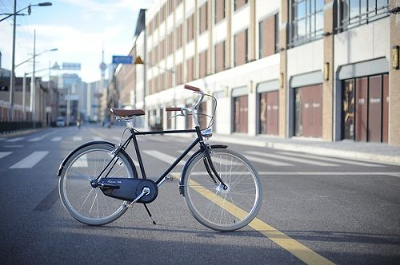
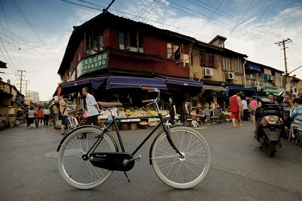
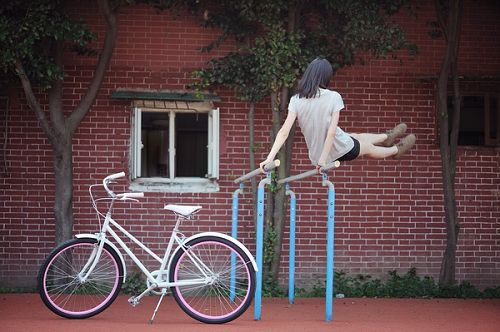


吃的愿望 @ Aug 22, 2010
其实我想写昨晚看的那部GAY的电影，blog编辑界面出现差错，写了半截的文字丢了，兴致全无，改贴图吧。
某晚，路过一卖鸡蛋饼的路边摊，看摊主将面摊在铁板上，过一会儿把打好的鸡蛋从面上的孔倒入饼里。加上酱、火腿肠等配料一起出售，2元。我说我什么都不要，只要饼，人家也不客气，价格一点没降。拎回家往饼上涂了六味居的腐乳，卷起来，就着白米粥一起吃，那个香啊。
上周末特想吃西餐，南京好的西餐馆屈指可数，新华书店对面的NAPOLI西餐馆现在改为面包店了。东西不错，就是餐馆开的位置不好，没地方停车，会影响销售。结果吃西餐的愿望在本周末的亨利之家解决，差强人意啊。餐毕，这才想起钟山高尔夫的西餐还不错，下回再去吃。

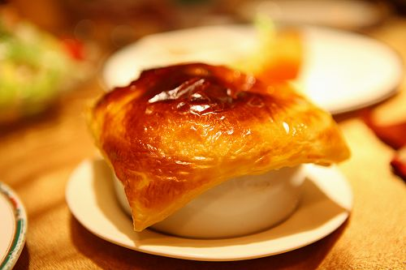
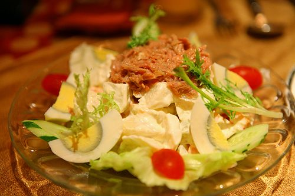


巴基斯坦邻居晚上聚会，送来他们的食物。刚刚饱餐的人还是笑纳了，好奇每天弥漫出来的烹饪气味儿，都是哪些食物？用怎样的烹饪方式制成的？
“你们是不是特别怕狗？”我问。
“不，是印度人怕狗，不是我们。”

不能舍弃的原则。 @ Aug 20, 2010
10点多钟从公司出来，天全部黑了，忘记看星星月亮，僵尸似的开回家。毫无胃口，扒了两口剩下来的午饭，喝下一大杯凉白开，这就要向小周末的夜晚说拜拜了。果真今年生意好？所以工作特别忙吗？怎会有悲的感觉呢？
以前工作闲，闲到头上长草。现在忙起来，这才理解有人曾对我说过的话：“人家都在忙，你嘻嘻哈哈的，别人什么感受啊？”每当我在埋头苦干，忽然有一两封与工作不相干的邮件发进来，不合时宜，令人厌恶。我爱工作，但对这样的工作没有爱，在其位谋其职，仅凭责任心。想来不过是处于工作的低境界：养家糊口。以前一有活动一放假，整个人撒了欢似的冲出去耍了，有消耗不完的精力，原来工作是在养精蓄锐？年纪轻轻处于这种状况也没什么好得意的。然而今年的工作强度走向另一个极端，已经影响了我的生理周期，以及听说有同事因为内分泌失调而发胖的故事。。。同事说该请假就请，自己身体重要，难道要象当年的某某某每天加班吃方便面，最后得了癌症，化疗的费用还卡来卡去，人家一气之下辞职自己干去了，看病的钱也不找公司报销。俺们觉得如果这个人是个领导，医疗费用可能会报得很顺利。
其实，工作与生活不矛盾，但要平衡，可以是相辅相成的关系。特别不欣赏有种类型，只工作没有娱乐不休假，有健康问题，（但貌似心思也不在真正的工作上）多可悲啊。工作的目的是为生活服务的，永远不能舍弃这个原则。
有位邻居先生每天早晨，对，是每天早晨，天一亮就开始擦车，把他和他太太的车擦地干干净净。先生在证券公司工作，不知道工作是不是忙，有多大的劳动强度。但是一个人身体好，有精力，当然还得有家庭责任感，才能做到每天擦车。身体好是福，对于整个家庭来讲也是福。工作和生活的前提，得身体好。关照自己的健康，也是对家人负责。
I@电子 @ Aug 19, 2010
某杂志上介绍随身（常用）个人电子产品的栏目，很有趣。我也是电子产品爱好者，早几年按期订阅数码电子杂志。不过电子产品更新换代太快，这边还没用出感情，那边已经上新了，总有跟不上的疲惫感。随着年龄增长，恍悟“物尽其用”才好。
22岁澳大利亚学生嘉弓，他常用的电子产品与他的专业与爱好相关，比如摄影、模型、画画、读书、音乐。和照片上这些东西在一起，是他生活很大的一个组成部分。这些东西不再是简单的电子产品上的意义，更是他的生活和实现自我创意的必备。

新加坡学生21岁学生JAMWAY，是个注重细节的人，所以她更喜欢新加坡这个精致的国度。读书期间，电子邮件往来非常频繁，所以PUSH MAIL的BLACK BERRY成了她的首选，而8900是其中商务味道最淡的一款。莱卡D-LUX干净的外观是她最为心水的，全银色外观搭配纯皮套子。成像质量上，虽为卡片机，但有莱卡和松下做后盾也可无忧。iPod touch是JAMWAY用过的iPod系列中最喜欢的产品，操作感很强，还可以浏览网页。

25岁北京职员Raymond，据说已经精简很多东西了，毕竟上下班不方便，即使这样包包依然很重。iPhone和Moto一直装在随身的口袋里，因为iPhone和Android系统都喜欢，所以各备了一只。iPad，看书上网是他最常用的功能，如果其他产品待机能象iPad有10个小时的时间的话，这款产品也就失去了随身携带的意义。带两只相机是不得已，他喜欢胶片感，而有的场合却需要数码来完成任务。所以选了轻巧的理光R1s和奥巴的E-P1，据说E-P1画质比卡片机好很多，装饼干头的话，比卡片机好很多。

我拍了自己随身（常用）的电子产品。
***SONY的PSP，旅途中可用来看电影、看书、玩游戏、浏览存储照片，有上网功能，很方便，体积比iPad小很多啊，除了屏没有iPad大之外，其他都是优点。对iPad没有爱，携带不方便，苹果产品在中国使用也有它的不方便性。PSP右边是部6国语言电子翻译器，为旅行购置的；
***iPod，看视频听音乐，随身携带方便。SHARP手机每天使用，用它上网也方便。再往右是SONY的bloggie，随身携带可以拍照片拍视频，完全是为网络应运而生的产品，最神奇的是它需要外接的360度摄影头。BVLGARI香水，今夏最爱。CANON镜头盖和IS小小白代表5D MARK II出场，这是我经常使用的数码单反；
***SONY卡片机、LANCOME口红、SONY MP3播放器，那只紫砂壶为衬托品。丹麦产手表和瑞士买的MAXMARA眼镜。
这些电子产品中功能有些是重复的，因为会忍不住想体验一下新产品的乐趣，重复消费等于浪费。当然现在这种浪费越来越少，不会为了玩一玩去买，而是真的需要才会考虑是否入手。下面我最想入手的是饼干头相机，具体哪个牌号的还未最终决定。

EX-LOVER @ Aug 17, 2010
女友不约而同谈论日剧《同窗会》 ，极少看日剧的我忍不住好奇，买了DVD回家。昨晚看到午夜才爬上床睡觉。才看到第三集。恩，是连续剧。。。一般看连续剧就象磕瓜子，会上瘾，有停不下来的趋势。还是喜欢看电影，当天就能了结。
开始三集大致讲述一群45岁的中年人，参加初中同学聚会后产生的情感波澜，貌似中年危机？故事煽情，既有贵妇家庭生活的落寞，也有传统女性的情感挣扎。。。受不了黑木瞳的表演方式。看《同窗会》不禁想起周末和几个朋友吃午饭，其中一个有外遇，且不断有外遇，到了时间一定要赶回家送老婆孩子去上课，送完再赶回来继续吃。他说这是内疚综合症的表现。如果你对你的家庭生活有说不出的失落和无奈，便给了虚弱机会。
大久保君说：“爱情，有着惊人的破坏力，爱情可以改变一个人的，这种觉悟都没有，只想稍稍品尝爱情的甜美，在酿成苦果前迅速抽身而退，这样只不过是肮脏的男女关系而已。”
虽然现实生活的确没有看上去那么美好，却也对此片无法产生更多的共鸣，对于没有情感困惑的我来说。既然有权利折腾，重新选择，为何要虚伪苟且地度日？《同窗会》片尾曲的旋律很好听，歌名《ex-lover》。日剧里还是最喜欢《东京爱情故事》，分享一下93年补拍的新结局。

火柴盒上的记忆。 @ Aug 17, 2010
记得小时侯没什么玩具，也没什么娱乐，收藏糖纸、火柴皮成为大大小小孩子们的乐趣。有些糖纸崭新的，记不清楚从何渠道而来，那些五颜六色、各种图案设计的糖纸被夹在书里，每一页夹一张。时常拿出来翻一翻，观赏把玩。
火柴皮是从用过的火柴盒上小心翼翼撕下来的，70年代末80年代初，中国的火柴盒基本呈系列化，有的是4张一个系列，为了集全一个系列到处寻找。火柴皮集中放在塑料袋里收藏，与志同道合的小朋友分享、交流。有时大家还会以物换物，互通有无。
现在的小朋友们不知道会收藏什么？有时想想物资匮乏未必是坏事，否则孩提时代那些不起眼的糖纸和火柴皮，又如何能引发我们那么大的兴趣？它们让记忆中的童年充满色彩和温馨。
布拉格设计师Pavel Fuksa为Navigators的歌曲《my place》 （点击观看MV视频）的MV设计了178个美丽的复古火柴盒。歌曲的歌词全部印在了这些火柴盒上。
如今火柴市场还有过去那么繁荣吗？正好集满一首歌的歌词，非常艰难啊。从印刷成本来看，178个不同的火柴皮，且还是不同图案的，印刷厂一般不会接这样的活，除非提高价格。会不会是为了拍MV，彩打出来贴在火柴盒上的呢？

一杯浓咖啡的演变. @ Aug 16, 2010
卡布奇诺、玛奇雅朵、拿铁、摩卡、意式咖啡、美式咖啡.....去咖啡店点咖啡，总是被这些咖啡名称弄得有点晕？其实他们都是在一杯浓咖啡的基础上演变出来的。
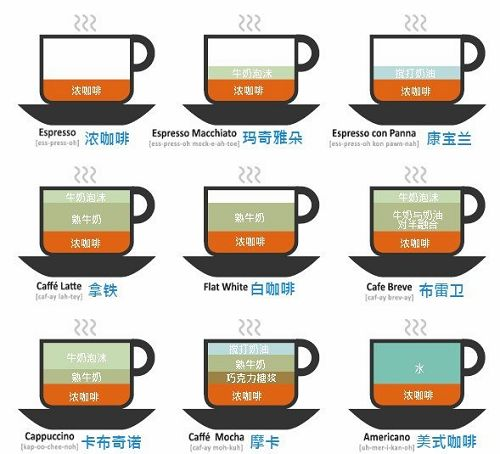
Happy Birthday~ @ Aug 15, 2010
原本不想过生日的，打算在家避暑，弄点小食随便吃吃，看看电影，与家人相伴着轻松过完周末。但是Maggie组织了一场看似平常的聚餐，选了紫罗兰颜色椅子的餐厅。末了，上来一份85度C的朗姆酒蛋糕。。。凑巧提前庆生，ZF规定15日全国为舟曲泥石流遇难同胞哀悼日，禁止娱乐活动。之前陆续收到外地朋友送的礼物，那些或远或近的人，记得我生日的人，给我生日祝福的人，都让我感动不已。表白很矫情，总之朋友一场，没白处。
15日晚上在家看中央电视台的《东方时空》，看得牛流满面，灾难面前最可爱的人还是人民子弟兵啊！
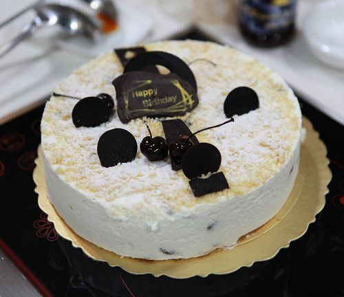

饭后尚早，一行六人去了五台山附近的3 COFFE店，第一次去。听说搬家了，新店一楼吃饭，二楼喝咖啡，楼上楼下两个院子让人谗得流口水。口水没流完，停电了。以下文字来自问问：
被突如其来的暴雨困在车里。隔了一扇窗，看天地哭嚎，大动干戈。没人带伞，扑土有一把扇子，遮阳，招风，挡雨，也许还避雷，但这么大的雨，我们只是把它搁在一边，散漫聊天。唯有皮蛋妹，上窜下跳，像是这场暴雨的唯一导演。
后来雨停，我们踮脚走路，装作正趟河而过。湿漉的地面让人欢喜，水汽氤氲。这几日晒，草木鱼虫都皱巴巴，灌雨一场，又将把它们充满，生命好像重头来过。我们站在南秀村的小路口向下张望，这可真是一个孤零又必要的路口，像晚礼服领口上那个局促的礼结。
上海路。夜光清凉，路人从容。急速的雨后则是平缓的城市。3CAFE的新址我们喜欢，尤其是2楼和院子，所有可以张望远处的地方，我们都喜欢。年轻人在畅饮，我们身后有一杯杯的啤酒和带着本地腔的对白。窗子是大红漆，叫做菲林的猫，找一切机会从那里跳出去。叫做塞米的狗，从门口路过，和小皮蛋妹，在桌下暗送秋波。皮蛋妹还太小，请你等一等……
大雨又来，线状下落。有人看见白光闪过，姑且相信那是闪电。整个屋子陷入黑暗。啊。电线被打掉了！又待了一阵，冷气跑掉，服务生就推开窗子请光进来。世间的光混合成暖色流光，抚摸一遍墙壁，抚摸一遍客人的肌肤，又流了出去，真是百媚丛生的。
我们点了蜡烛，混喝着啤酒和卡布奇诺，胡扯淡，乱拍照，用扇子抡风，雨间的暑气容易消散。汗贴满了脑袋，也觉得可以忍受。这里有窗，关上是我们的小世界。推开就是大人间，即便是雨后带着萧条的人间，在这8月大热里，也是一阵清凉微风。
@南京地铁2号线 @ Aug 13, 2010
最喜欢第一张，和爱好摄影的女孩子一起外出拍照，觉得很过瘾。
photo by Chen wenwen


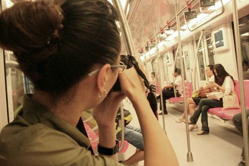
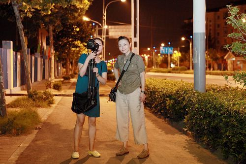
这张很有意思，对吧。她们称之为“恶少遇到少女图”。
当时的情形是这样的，相机后面的问问说：“哎，你们还能放松点儿啊？”
于是箱子姑娘和我便开始活动筋骨，一瞬间被拍下如此有喜感的画面。
这哪里是恶少，分明是一只鸡爪猴儿，呵呵~

DRESS BLOG @ Aug 13, 2010
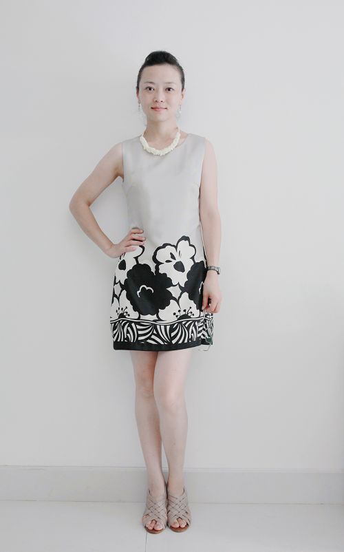
“像野狗一样生存” @ Aug 13, 2010
从美院毕业后，像野狗一样地生活，正是我比较理想的状态。野狗呢，就是饿了去找吃的，吃饱了，就随地大小便，愿意和别人咬架就咬架，愿意和别人亲热就亲热。没人管你，没有任何一个东西制约你，你也不向任何人献殷勤，你献也没有用，因为你找不到对象，也找不到目标。方力钧《像野狗一样生存》
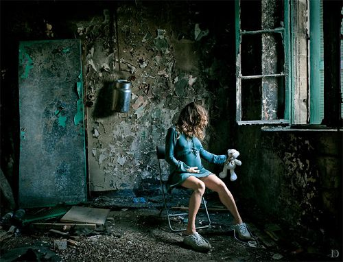
Between past and future
晚上无风，闷热。加班刚到家，无食欲，盛碗冰银耳羹，额外加入绵糖。
这周生活质量差，前三晚都是凌晨一点多才睡，第二天面目狰狞的去上班，所有肌肉因缺觉呈下垂状，就这么拖着进入下一个夜晚。饭吃得随意，电影一部没看，恨不能穿家居服直接出门，每天紧张愤怒骂娘。还是会极力控制，自控也他妈的累，对着电话喋喋不休耍嘴皮子时，我就是条疯狗。
@南京地铁2号线 @ Aug 11, 2010
我们在地铁站上摆弄三脚架，地铁工作人员如临大敌，慌张询问，后来连穿“航空制服”扎领结的工作人员也跑来制止。。。南京地铁规定不允许拍照。。。南京有这么落后吗？
以及早就听女友们说2号线上的椅子是红色的，有人喜欢有人不喜欢，去了才发现喜欢不喜欢原来是有原因的，因为是这种红，不是大红也不是粉红色，而是西瓜红，水红色？我说：“不会是选了大红色，送来的产品有色差吧？”问问答：“应该不会吧。。。”这颜色我们喜欢，想到决定使用这颜色的官员会不会是位女士？
又以及，夜间室内拍摄，我的相机拍出来的片子偏暖，色温有问题，需要学习如何调整相机设置，我先哭去。。。


夜色温柔 @ Aug 11, 2010
晚上与问问和箱子姑娘，三个人带了三部相机，两个闪光灯，两只三脚架。如此隆重只因第一次乘坐2号线，不仅拍摄了地铁，还在户外的夜晚练习使用外置闪光灯。晚上的光线其实也挺美的，对拍摄者要求更高。我目前还不能熟练设置灯光的角度，仍然处于以量而不是以质取胜的阶段。图慢慢上。
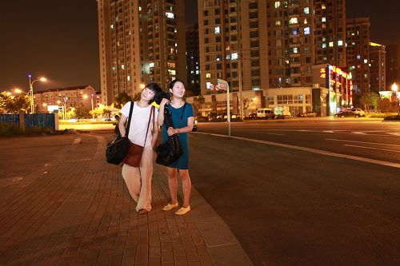
拌面 @ Aug 10, 2010

中午下班去菜场买了碱性面条，2元称了不少面回来。0.5元面条的量即可作成一顿午饭。配料有藕、香菇、雪菜、鸡毛菜、西红柿，用豆豉酱炒熟，入味，浇在煮好的捞面上，加上两个荷包蛋和两片烤鸭块。下回记得在冰箱里冰一壶凉白开，煮面在冰水里过一下可能更好。天气不那么热，中午到菜场买菜也舒服许多。
观影《The Ghost Writer 》 @ Aug 10, 2010
短期内看了两部Ewan McGregor主演的电影，如果你看过《Trainspotting》一定对他有深刻的印象。上个月看了他与Jim Carrey搭档主演的《I Love You Phillip Morris》 ，同性恋题材，Jim Carrey的表演似乎已经到了尽头，就象送给观众的一份快餐，吃下去毫无滋味。人的多变性导致我们希望看到感受到的事物，不是停滞的，而需要有未知的变化。这种贪婪性也暴露在看电影上，Jim Carrey多少年....一直是同一个表演模式，再好吃的美食也疲劳了。因为有了Ewan McGregor韧性有余的表演，《I Love You Phillip Morris》才增色不少，否则这部仍然是Jim Carrey式的电影。Ewan McGregor在片中出演Jim Carrey的GF，并未刻意夸大“姨”的表演，而是有控制有收敛的，只在细节上梢作展示，耐人寻味。
昨晚的《The Ghost Writer 》（影子写手），Ewan McGregor主演前英国首相回忆录的枪手。电影主题围绕着The Ghost Writer展开，在我看来电影真正描写的是“一个傀儡的诞生”。不擅长做出色政客，并不是NO.1，没关系，因为更大权利拥有者需要的仅仅是一个傀儡。 大到国家间的政治，小到单位企业的人事关系，我们身边不乏这样的故事。你只需要听话，为我所用，有基本的工作能力。影片中的前英国首相正是如此诞生的人物。
如果精力允许，打算把Ewan McGregor之前的电影再回顾一遍，他特别赋有表演欲望，演技自然流畅，能感受到他体内积聚着丰富饱满的情感，但他又不是那么快就爆发，而是有控制地释放，不持才自傲，所以也没有很多演员身上的油气。爱死他微微上扬似笑非笑的嘴角，这种表情我在有些人的面孔上看到过，他们聪明、温和、低调，眼睛明亮会说话，圆滑又可爱。

这是《TRAINSPOTTING》中的一段台词，曾blog于“2005年11月1日：
Choose a job.
Choose a career. Choose a family.
Choose a fucking big television.
Choose washing machines, cars, compact disc players and electrical tin openers.
Choose good health, low cholesterol, and dental insurance.
Choose fixed interest mortgage repayments.
Choose a starter home. Choose your friends.
Choose leisurewear and matching luggage.
Choose a three-piece suit on hire purchase in a range of fucking fabrics. Choose DIY and wondering who the fuck you are on a Sunday morning.
Choose sitting on that couch watching mind-numbing, spirit-crushing game shows, stuffing fucking junk food into your mouth.
Choose rotting away at the end of it all, pissing your last in a miserable home, nothing more than an embarrassment to the selfish, fucked up brats you spawned to replace yourselves.
Choose your future. Choose life…But why would I want to do a thing like that? I chose not to choose life. I chose something else.
And the reasons?
There are no reasons.
Who needs reasons when you’ve got heroin?
上新菜。 @ Aug 09, 2010
周末，做了两款新菜。
上图：豆豉+雪菜+冬瓜片（自创做法）；
下图：肥牛片+西红柿+洋葱（降血脂效果）+番茄酱（此款借鉴箱子姑娘的菜谱，牛肉换成了肥牛片。）
上图中的菜得到普遍好评。下图菜下次记得少倒点番茄酱，会更好。
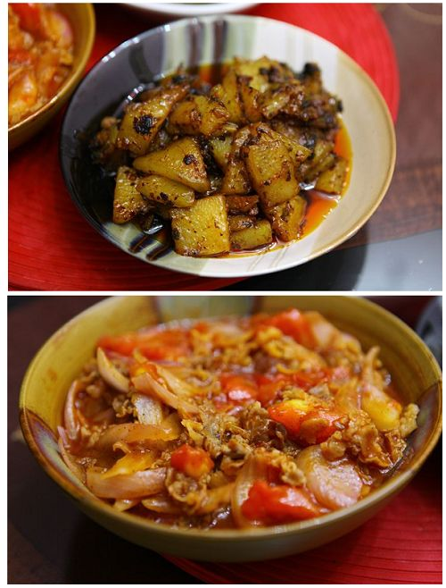
暑气和风 @ Aug 09, 2010
丰盈流溢的秋意还没到来，立秋几日，此时，才是真正的暑气和风，正午仍然赫赫炎炎，早晚的风却已经凉爽了许多，不再是带着热感的暖风。周末的傍晚迎着夕阳在小区里散步，景物被笼罩在金色的光晕中，很容易就陶醉了。每个周末都是一个暂停，释放压力。有张弛的生活节奏也好，有了对比，属于自己的时间才无比珍惜。


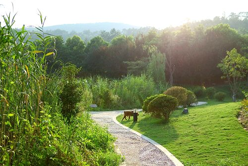
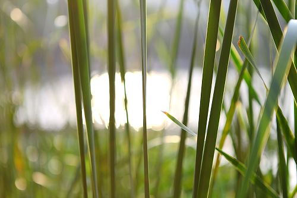
夏黑之甜蜜啊~ @ Aug 09, 2010

产品介绍：夏黑葡萄又名黑夏、夏黑无核。欧美种，平均穗重608g，平均粒重7.5g，最大粒重达10g，完熟紫黑色，肉硬脆，甜味浓，有淡草莓清香味，含可溶性固形物17%，品质上等。7月中下旬成熟。是目前优良的大粒、早熟、优质、抗病的无核品种。
热情坦率的箱子姑娘帮忙团购了“夏黑”葡萄，之前我特爱吃秋季的乒乓葡萄，大大的一颗，吃在嘴里很过瘾。夏黑的个头不大，暗紫色，意想不到的甜，还没籽儿，带点小清新。一箱有5斤，7元/斤，比鞋盒大一点的箱子。在我家一天一夜，已经消灭了半箱。第一次吃它，家人便吩咐再买几箱回来，催着我去打招呼。。。每次吃到酸葡萄，就会想到维生素片，一颗维生素片包含229颗葡萄等等的简介，要是葡萄都象夏黑这么好吃，谁还去吃维生素片啊？
好吧，箱子姑娘，夏黑真的很好吃，下次团购帮我团个10箱吧。
DRESS BLOG @ Aug 06, 2010
昨晚雷电交加，跑去阳台搬花花草草，一阵风雨伴着雷电过来，吓得我跳起来。《零距离》报导，一15岁女孩在中华门汽车站等车，戴耳机听MP3被雷击中，身旁一大叔也顺带被击倒在地，满脸是血。女孩仍在昏迷中。新闻里说是MP3导致的，除非是金属外壳的MP3？求真相？
周末啦，不是吗？炖了银耳汤，才注意到家里没有冰糖了。中午把炖好的银耳汤放到冰箱里，周末有的吃了。

*SUMMER* @ Aug 05, 2010

犹如度假 @ Aug 04, 2010
下午有个移民加拿大的老同事回公司转转，移民6年，除了脸稍微圆了点，其他几乎没变化。身上背着个大牌包，衣服穿得很琼瑶，头发随意的挽着。她的儿子秋季准备考美国的大学，夏天回国呆两个月。据说部分加拿大人民对中国的印象还停滞在古老神秘遥远的印象，以为中国没有电灯，更别说能看上电影了。有位娶了中国太太的加拿大人，来中国探亲回去后，兴奋不已，用“好象到了另一个星球”来形容他们所到的香港和上海，问：“为什么是另外一个星球？”答：“因为从来没见过那么多人，美食既多又好吃，夜生活丰富。。。”完全超出他之前的想象。虽然加拿大自然环境与社会环境好，但这位老同事还是喜欢国内的生活，朋友多，玩的也多，热闹。
她在加国工作的那一小段时间里，体会到打工的艰辛，公司的制度是迟到一刻钟扣半小时工资，迟到一小时扣一小时工资，她因为不是为钱工作，最冷的冬季有时上午会迟到三小时。。。工作总是做不完，进了公司就一直在工作。一天八小时，想象在国内一样混根本不可能，这才悔悟应该珍惜国内的工作。去之前认为自己英语还不错，到了那里才发现国内的英语教育简直太奇怪了，有些用词已经很古老，人家早就不这么说话。刚去就象傻子，特别害怕接电话，很多事情都是通过电话预约、留言，大概适应了半年才憋过来。
之后宅在家中照顾儿子，先生在国内赚钱养家。这种分离的生活模式，似乎还不少。可是每次加国朋友婚礼邀请以及儿子的家长会，她都会找借口不去，因为别人都是全家或夫妻出动，如果总是她一个人外出社交，会造成很奇怪的印象，为此还要解释一番。外国人特别不能理解，即使国外生活条件再好，夫妻分离的生活，也是他们不能接受的。有意思的是，在瑞士旅行时，HANS说他遇到一位中国妇女，她的丈夫在另一个城市，孩子也不在身边，一家三口分居三地。。。爱，无论是爱情的还是亲情的爱，真实存在的爱总让人难以割舍分离，不得不说中国式婚姻还真是一门可研究的课题，为什么就有那么多中国人可以持续地在这种模式中生活下去？是不是传统中国式婚姻形式远远大于内容？
***早晨栀子花开了，第二朵荷花凋谢后，第三朵花苞冒出来，对于一个养植物的新手，还有什么样的早晨比这样的早晨更让人兴奋呢？

***据说南京已经不在四大火炉之列，可是下班时汽车里分明显示外面温度为38度。如此高温天气，食欲也萎缩了，直接奔超市买回现成的熟菜：手撕鸡、炒花生、什锦菜、豆腐干丝与海带丝，恩，还有一份牦牛肉，放在冰箱里明天午饭吃。晚餐吃到口也很快，因为中午上班前电饭煲里煮了绿豆粥。高温夏季餐，能简则简。

DRESS BLOG @ Aug 04, 2010
送给网络上的人：我们每一个人，在这里既是说者，也是听者，当我们质疑、批判甚至辱骂他人的言论时，其实，我们也面临相同的困境。
面对同样一个信息，别人读到积极而自己读到残酷？你可以评论也可以不评论，你转发什么，写什么内容，选择关注什么，不关注什么，都代表了你对社会，对人性的关注点，如果你觉得自己看到的是一个残酷世界，那么现实生活里，你是不是也看见这些呢？还是说你一直回避它们，虽然它们一直在那里。一切都和你自己的内心相关。
虽然交流充满魅力，但当你一言刚出，即刻众说纷纭时，这种感受，可不轻松。不得不感慨，当我们获得交流的权利时，这种对自己生活碎碎念的交流，也有它的有限性。


牵挂 @ Aug 03, 2010
下班回家的路上收到Grace的短信，上写：本周末即将离开上海前往香港，这次是去待产，十一月要当妈妈，现在肚子已经不小了。这半年不容易，边怀宝宝边作完上海老建筑研究工作，才好放心离开。再回来时，会是三个人。
回家打电话给她，声调还是那么平缓稳重，象溪水一般清澈自然。25年的朋友，她常挂在嘴边的那句“我们要保持联系”，这“联系”就象命运里有一根无形的线牵引着彼此，依然清晰记得她曾说过：“君子之交，淡如水。”
祝愿天下真正的友情越酿越香醇。好吧，香港也不是很远，来去也没那么困难，相见总有时。保重。
当年在香港大学读博的Grace。
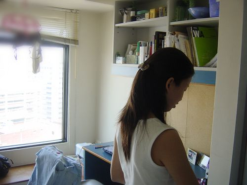
爱．周末 @ Aug 03, 2010
今天不过星期二，又开始盼望周末了，估计连照片中的它也一样。狗狗们是否有周末的概念？它们会不会想主人为什么今天会在家呢？土豆似乎开始了解哪些时候可以跟随到门口，哪些时候只需要目送。当然还没有Luke那么了解，一般时候Luke消失的很快，没有任何留念地消失到餐桌下面，占据一处它认为最凉快的领地。
上个周末带着土豆外出，吃香的喝辣的都有它的份儿，哪怕只是一点点给它解解谗。周末的它无论如何都是满足的，象我们一样满足。

********************同情有时@Night***********************
晚上从父母家回来，又一次遇见那只流浪的小黑狗，尾巴耷拉着，一副垂头丧气的摸样，迈着小碎步，见人就躲。土豆上前与它相互嗅了嗅，之后它赶紧离开。
它居然还活着，这更加让人伤感。听隔壁小区的保安说它是工地上做饭的人抛弃的，它每天会往返工地与各个小区之间，每天。我想带它回家，它从保安手中挣扎逃走，自那次之后，已有大半年时间过去，它依然小心翼翼游荡在各个小区里。似乎连同类都不愿靠近。有时我下班回家的路上远远看它卧在路的中央，见车近了便缓缓走开。如果能抓到它，带它回家，让它快乐，我是不是会长期让它留在家中，对此我并不确定，毕竟三条狗对于我来讲的确多了点。有时我就是这样走一步看一步。
从家中端了狗粮出来寻它，见它卧在远处黑暗的水泥地上，扔几把狗粮过去，它再次慢悠悠地离开，躲进车肚子下面，我把狗粮倒在车的外围，希望它能饱餐一顿，希望它喜欢吃。不得不说那个非常莫落的小身影很让人牵挂。
很困惑的问题是，为什么对于狗狗的这份同情，却少于对人？这种情绪相信并不只是个人的，而存在于部分人群中。我们同情动物，但对人却同情的少。。。这是为什么？是因为人类比动物更可恶？因为人类可以自力更生，而狗狗却更加需要人类帮助？
Mila 的白日梦 @ Aug 03, 2010
芬兰赫尔辛基的妈妈摄影师Adele Enersen 为她的新生宝宝Mila 拍摄了这一系列名为〝Mila 的白日梦〞的照片。
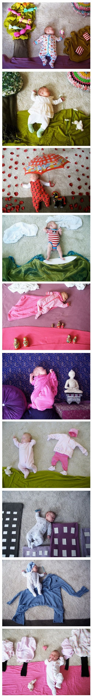